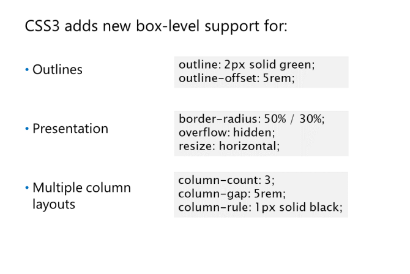
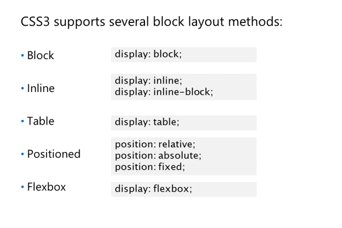

Właściwości bloków
CSS definiuje outline box(pole konturu) oprócz czterech
pól (content, padding, border, and
margin), które składają się na model pudełkowy. Jednak na
kontur nie dodaje się do całkowitej szerokości ani wysokości
pudełka. Zamiast tego jest rysowany wzwyż margin
box i zdefiniowany względem box's border.
Kontury mogą zatem nakładać się na stronę.
Jak narysować ramkę i kontur wokół pudełka. Kontur jest narysowany
5px od granicy:
Outlines są zdefiniowane przez cztery właściwości:
-
outline-width - ustawia szerokość konturu. Możliwe wartości to thin(cienki), medium (the default), and thick(gruby),
or a określony rozmiar taki as 2px or 1.5 rem.
-
outline-style ustawia styl linii konturu. Najczęściej używane wartości to none, dotted(kropkowany),
dashed(przerywany), and solid.
outline-color ustawia kolor konturu. Ustaw dowolną dopuszczalną wartość koloru lub invert(domyślnie)
outline-offset ustawia odległość między konturem a ramką.
skrócona właściwość: outline-width, outline-style, and outline-color
w tej kolejności. Właściwość outline-offset jest nowa w CSS3 i musi być zadeklarowana osobno.
Prezentacja:
border-radius umożliwia ustawienie zaokrąglonych narożników na granicy pola przez zdefiniowanie
promień okręgu lub promienie elipsy, wokół której wygina się róg.
border-radius: 2em; // circular corners with radius 2em
border-radius: 5px/10px; // elliptical corners with radii of 5px high and 10px wide
Możesz ustawić promień każdej z czterech ramek
rogi pojedynczo: border-top-left-radius, border-top-right-radius, border-bottomright-
radius, and border-bottom-left-radius
overflow-x and overflow-y umożliwiają ustawienie, co dzieje się, gdy
element jest zbyt szeroki lub zbyt wysoki dla pudełka, które go zawiera. Możliwe wartości to:
visible: The content is not clipped and is rendered outside of the box. This is the default.
hidden: Only the content within the box is shown.
scroll: Only the content within the box is shown, but a scrollbar is displayed so the rest of the
content can be viewed.
overflow-x: hidden;
overflow-y: scroll;
resize - pozwala oznaczyć blok tekstowy jako skalowalny, zakładając, że overflow został już ustawiony jako hidden lub scroll. Możliwe wartości to none (the default), both(oba),
horizontal, and vertical, oznaczający, w których osiach element powinien mieć możliwość zmiany rozmiaru.
overflow: hidden;
resize: horizontal;
min-width: 60px;
max-width: 400px;
Multiple Column Layout
Multi-Column module - dodaje właściwości do ustawienia liczby
kolumn, w których będzie wyświetlana zawartość pola, a także ich width, padding (gap), and border (rule).
Jak stylizować elementy sekcji, aby użyć układu trzech kolumn z 5rem
przerwa między kolumnami i linia przerywana między każdą kolumną:
section {
text-align: justify;
column-count : 3;
column-gap : 5rem;
column-rule : 1px solid black;
}
column-count sets the number of columns to be used.
column-width sets the width of the columns.
column-gap sets the padding between the column.
column-rule sets the properties of the line drawn between columns.

Block Layout Models
Właściwości display(wyświetlania):
block: pola bloków są sformatowane w dół
jedna po drugiej i respektująć padding,
border, and margin values.
inline: bloki są sformatowane jeden
po kolejnym na podstawie linii bazowej ich zawartości tekstowej. Bloki wbudowane ignorują height and width values
inline-block: bloki układu bloku liniowego są formatowane jeden po drugim na podstawie linii bazowej
zawartość tekstu, ale zachowują wartości wysokości i szerokości.
table: układ tabeli umożliwia identyfikację bloków na stronie jako tabele, wiersze, kolumny i komórki.
Bloki są wyrównane według krawędzi, a nie zawartości, i dopasowane do tabeli.
Flexbox: układ Flexbox jest nowy w CSS3 i zaprojektowany tak, aby był znacznie bardziej płynny niż inne. Ty wybierasz
w którym kierunku są układane pudełka i jak są one sortowane, w zależności od tego, jak nadwyżka
należy obchodzić białe znaki wokół bloków.
display: flexbox; // for a block-level flexbox container
display: -ms-flexbox;
display: inline-flexbox; // for an inline flexbox container
display: -ms-inline-flexbox;
Wszystkie te modele układu (być może z wyjątkiem Flexbox, w zależności od ostatecznej implementacji)
zakładają, że bloki są ułożone zgodnie z normalnym przepływem elementów. np:
Wszystkie bloki mają domyślną wartość pozycji CSS statyczną. Możesz usunąć dowolny z tych bloków z
normalny przepływ, changing position property to relative, absolute, or fixed.
Jeśli ustawisz position to relative, możesz użyć właściwości top, right, bottom, and left aby ustawić pozycję
bloku względem pozycji, w której by się znajdował.
position: relative;
top: -10px; // Top edge of block moved up 10 pixels from normal
left: 10px; // Left edge of block moved right 10 pixels from normal
Jeśli ustawisz pozycję na absolut, blok zostanie całkowicie wyjęty z normalnego przepływu i ustawiony
względem krawędzi bloku zawierającego.
position: absolute;
top: 25px; // Top edge of block 25 pixels down from top edge of container
right: 10px; // Right edge of block 10 pixels left from right edge of container
Jeśli ustawisz pozycję na fixed, blok jest poza normalnym przepływem i ustawiony względem krawędzi
okna przeglądarki
position: fixed;
bottom: 0; // Bottom edge of block in line with bottom edge of browser window
right: 0; // Right edge of block in line with right edge of browser window